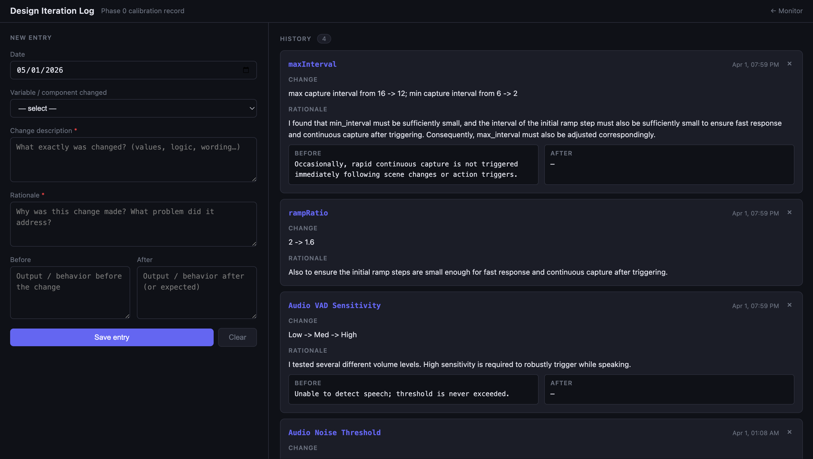

Iteration Form — Inputs
Core Variables
Component ChangedCategorized pipeline variable selection
Custom VariableFlexibility for unlisted parameters
Narrative Context
Change DescriptionExact values and logic altered
RationaleProblem addressed and hypothesis
Behavioral Shift
Before OutputPrior system behavior
After OutputExpected or observed outcome

Context & History
Historical Reference
Entry HistoryScrollable archive of past modifications
Before / After TracesLongitudinal tracking of behavior shifts
Component Tracking
Timing & IntervalsRamp ratio and batch windows
Frame SelectionSSIM thresholds and importance weights
Prompt EngineeringInsight and pattern prompt wording